This demo should take about 5 minutes.
In this demo we will be expanding on the existing Xamarin.Forms UI by including tab navigation to different pages. Then we will be adding a new view list page of all the photos available to us in Azure.
Hyper-V enabled PC. Required for the Visual Studio UWP and Visual Studio Android emulators.
Internet connection is required in order to setup and run the demos.
You will need Visual Studio 2015/ or Community edition with Update 3
To download Visual Studio 2015 Community edition, https://www.visualstudio.com/vs/mobile-app-development/
Visual Studio Android emulator: https://www.visualstudio.com/vs/msft-android-emulator/
If you encounter issues with connecting Visual Studio debugger with the Visual Studio I would recommend following the steps from this blog article: http://dotnetbyexample.blogspot.ca/2016/02/fix-for-could-not-connect-to-debugger.html
(Optional) Mac for compiling and run the iOS projects. Mac is also required to use the XCode designers within Visual Studio for PC or Mac.
You’ll want to start up the Android emulator ahead of time. For the setup, you will need to install the Visual Studio Android emulator.
In Visual Studio, under the Tools menu options (1). Select on the Visual studio Emulator for Android option (2).
Select the Android device profile 5”KitKat (4.4) XXHDPI Phone (1). Click the Run green button (2). Click the Close button (3).
Go to the Solutions folder with this content, locate the Demo2.5.zip file, extract it to a new folder under your Documents folder.
Open up the solution file under the Start folder
We need to add in the new UI pages to the GPSImageTag project. Select the Pages folder in the GPSImageTag project (1). In the right-click menu select the Add option (2). Now, select the Existing Item option (3).
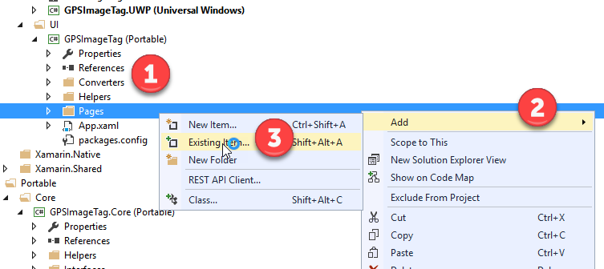
Select the all files from the folder the Documents > Demo2.5 > SRC > Start > Code Files> Pages (1). Next, click the Add button.
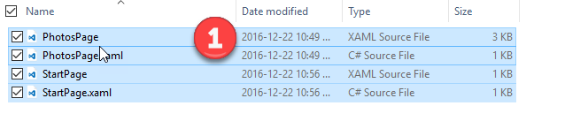
For each of the xaml pages added to the project we need to set the correct Build Action.
Select the PhotosPage.xaml file and make sure to set the Build Action to Embedded Resource (1). Repeat this for the StartPage.xaml file.
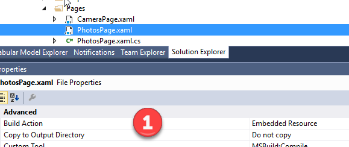
Next, we need to update the starting page for an application. Open the App.xaml.cs file in the GPSImageTag project (1). Next, update the line that sets the Mainpage to read MainPage = new GPSImageTag.StartPage(); (2).
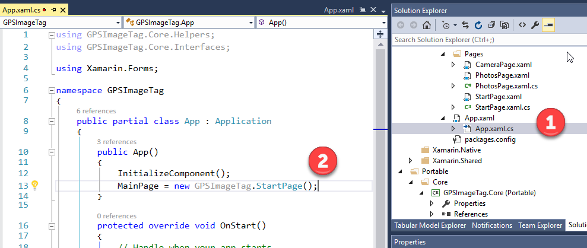
The app will now open this new page with tabs instead.
Now open the CameraPage.xaml file from the GPSImageTag (1). Walk through the XAML code that makes up the UI. The important thing to point out is that this is not the same XAML syntax that is found in Windows 10 UWP. XAML tags will have different names. XAML control properties will have different starting defaults. The XAML defined here is processed by Xamarin.Forms to render the native controls for each of the platforms. Xamarin.Forms XAML will only use the common controls found across the platform heads. So there is a limitation on the number of available controls.
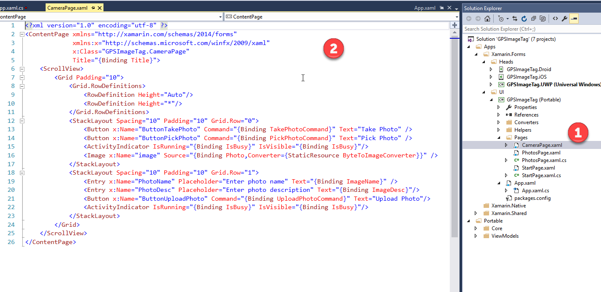
Open the PhotosPage.xaml in the GPSImageTag project (1). Here in the XAML we are defining a list of photos to display from Azure. We can see the ListView XAML tag. Within this tag we can see the ViewCell tag which defines the look of an individual item within the list (2).
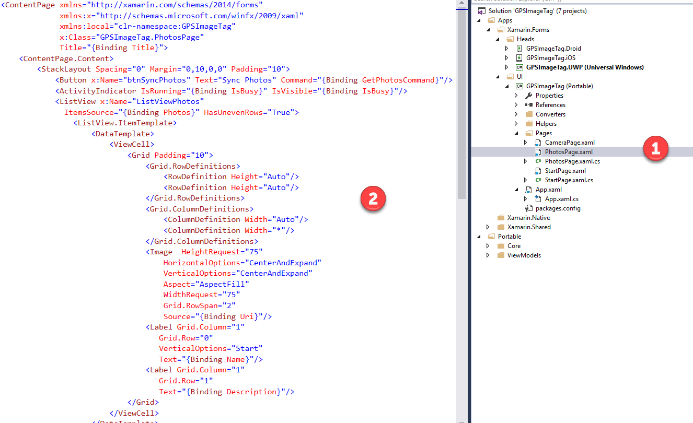\
Open the StartPage.Xaml file (1). There Is not much XAML within this file. It’s the code behind which defines our tab pages.
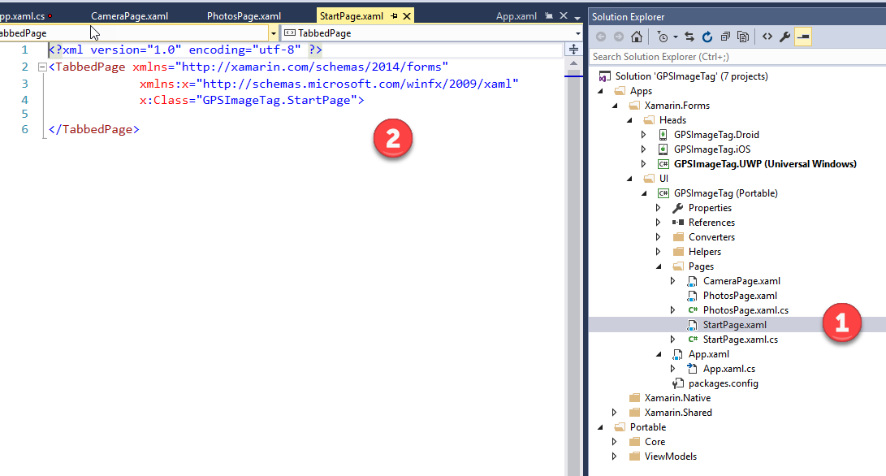
Open the StartPage.xaml.cs file (1). In the code behind file for StartPage we can see how to define each of the child tab pages. We can also see how the references are set to our other pages in our project (2).
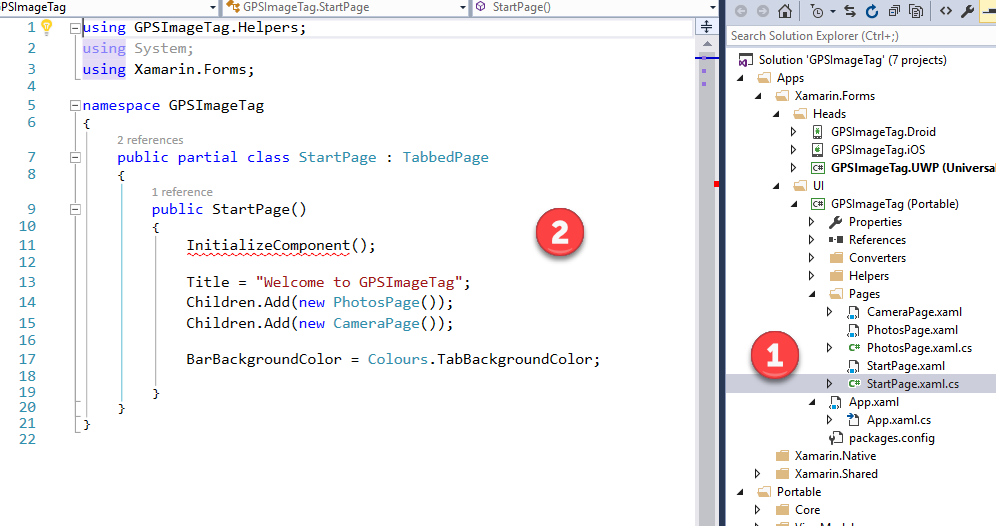
We need to add in the new view model for the PhotosPage.xaml to the GPSImageTag.ViewModels project. Select ViewModels folder in the GPSImageTag.ViewModels project (1). In the pop menu select the Add option (2). Now, select the Existing Item option (3).
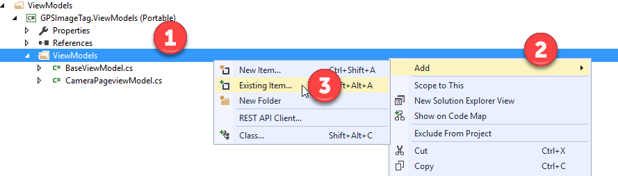
Select the PhotosPageViewModel.cs file from the folder the Documents > Demo2.5 > SRC > Start > Code Files> ViewModels (1). Next, click the Add button.
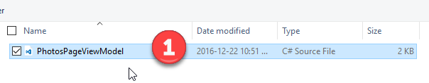
Press F6 to build the solution.
This time we will be running the Android client.
Select the GPSImageTag.Droid project (1). Next bring up the pop menu and select the option Set as StartUp Project (2).
Press F5 to run the Android client.
Click the Sync Photos button (1). We can see that the photos take from the UWP client can be found in the list (2).
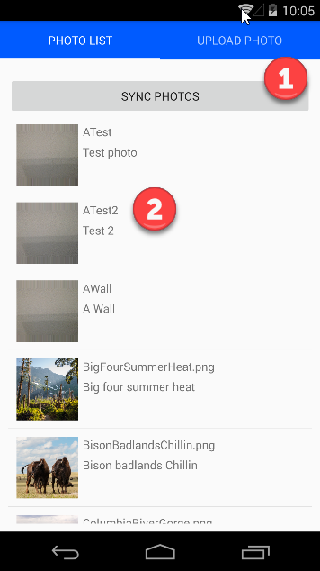
Summarize what occurred during the demo.